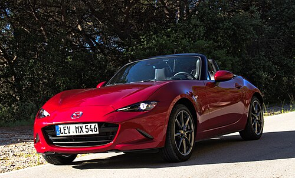

Definitions of sports cars often relate to how the car design is optimized for dynamic performance, [3][4] without any specific minimum requirements; both a Triumph Spitfire and Ferrari 488 Pista can be considered sports cars, despite vastly different levels of performance. Broader definitions of sports cars include cars "in which performance takes precedence over carrying capacity" [5] or that emphasize the "thrill of driving"[6] or are marketed "using the excitement of speed and the glamour of the (race)track"[7]. However, other people have more specific definitions, such as "must be a two seater or a 2+2 seater" [8] or a car with two seats only. [7, 10]

The exterior and structural design of a sports car is dictated almost entirely by aerodynamics and weight distribution. Its standard styling characteristics include:
Because they are highly specialized, niche vehicles, sports cars carry a significant price premium in Malaysia:
Practicality is not a priority for sports cars, making them the least versatile vehicles for carrying cargo:
Sports cars are precision machines built for high stress, meaning their durability profile is vastly different from a standard commuter car: